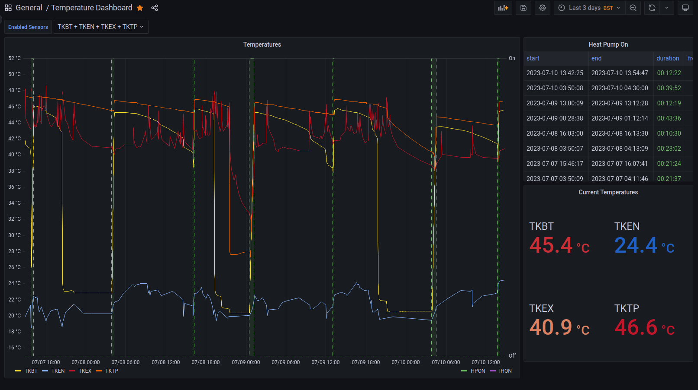

-
Github

Personal Projects
- Home Heating - Rust
- SpongeAPI Contributions
-
Gitlab
MinecraftOnline Contributions
- CraftBook Extra
- PenguinDungeons
In my house we have a heat pump connected to a hot water tank. I connected a Raspberry Pi to the system using a relay to control the heat pump, and thermisters to read the temperature. Initially this began as a simple python program to turn on the heating when our internet-connected thermostats demanded it, but it soon involved into a more complex program.
The program needed heat up water at night (at a cheaper rate), predicting how much hot water would be needed during the day for showers, baths and washing. I rewrote the program in Rust for better reliability as it was critical system. However this meant it had to be cross-compiled onto the Raspberry Pi, which initially proved difficult, but now is easy. To further ensure safety, I added a suite of tests to ensure that the program would behave as expected and not damage the heat pump system. This also involved learning docker in order to properly run a test pipeline on Github, ensuring that all the tests pass and cross-compiling for the Raspberry Pi automatically.
All temperatures are stored in database after sampling so that they can be reviewed along with the actions taken by the program. After my Work Experience at Lisi Aerospace, where they showed me Grafana, I implemented in order to display the state of the heating
Craftbook extra is a Minecraft plugin developed for the MinecraftOnline server. It adds a plethora of additional mechanics via signs. These allow players to be make contraptions not possible in the base game. However, this plugin is challenging to develop as every update must be backwards compatible with every previous version, and the server is over 10 years old.
Below is an example of the Bridge mechanic